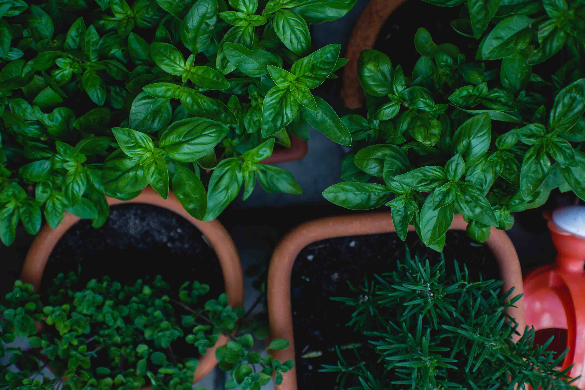

KENTUCKY VEGETABLES
Tomatoes
Virtually any type of tomato can be grown in Kentucky. After planting, amend the soil
with bone meal and 10-10-10 fertilizer. Water them at least twice a week. You'll also need
to use some type of support, such as a cage or a stake, or they will eventually get
so tall that they will collapse under their own weight. Never leave tomatoes lying on the
ground or they are likely to become diseased or be stolen by neighborhood critters.
Peppers
Peppers are fairly easy to grow. There are not very many pests or animals that eat the leaves
or the peppers themselves. Popular varieties are Bell, Jalapeno, Serrano, and Habanero. Your
plants will need plenty of sun if you want them to ripen quickly. Peppers grown in shade will
ripen very slowly, or sometimes not at all.
Onions
 Onion bulbs should be planted about one inch beneath the soil surface. Lightly pack the dirt
over top of them, but do not flatten it or the bulb may have difficulty sprouting and reaching
the surface. Like peppers, most animals and pests don't like the taste of onions and tend to
leave
them alone. Once the green stalks wilt and fall over, your onion is ready to be picked.
Onion bulbs should be planted about one inch beneath the soil surface. Lightly pack the dirt
over top of them, but do not flatten it or the bulb may have difficulty sprouting and reaching
the surface. Like peppers, most animals and pests don't like the taste of onions and tend to
leave
them alone. Once the green stalks wilt and fall over, your onion is ready to be picked.
Garlic
 Plant garlic in the last week of October and let it grow all the way until June of next year for
the
best results. Hardneck garlic bulbs will grow scapes, which are green stalks that curl and
eventually
grow a flower on the end. Once these scapes are about a foot long, you can cut them off an eat
them.
Wait about another month after scape removal and your garlic will be ready to pick.
Plant garlic in the last week of October and let it grow all the way until June of next year for
the
best results. Hardneck garlic bulbs will grow scapes, which are green stalks that curl and
eventually
grow a flower on the end. Once these scapes are about a foot long, you can cut them off an eat
them.
Wait about another month after scape removal and your garlic will be ready to pick.
Watermelon
Watermelon is very difficult to grow without using some type of fungicide, such as copper or
Mancozeb. Humidity tends to cause downy mildew to appear and kill the plants before they can
fully
ripen. If you apply fungicide every two weeks during the growing season and provide a lot of
water,
you will have beautiful melons ready to be picked by the beginning of August.
Cucumbers
 Cucumbers can grow on the ground, but they are for more successful when allowed to climb upward
on a
trellis, allowing for airflow that will help prevent disease. Pollinators such as bees and ants
are
crucial to the plants, so be sure to avoid insecticides wherever possible. Most cucumbers are
ready
to be
picked when they are 8 inches long. If you let them go too long, they will turn yellow.
Cucumbers can grow on the ground, but they are for more successful when allowed to climb upward
on a
trellis, allowing for airflow that will help prevent disease. Pollinators such as bees and ants
are
crucial to the plants, so be sure to avoid insecticides wherever possible. Most cucumbers are
ready
to be
picked when they are 8 inches long. If you let them go too long, they will turn yellow.
Zucchini
 There are dozens of types of squash that can be grown in Kentucky, but the most popular is
probably
zucchini.
Zucchini gorws quickly and easily when given a high phosphate fertilizer that will help the
vegetables develop.
It is important to trim back the plant if it becomes to thick, removing overlapping leaves and
allowing more
airflow between the plants to prevent the appearance of mildew.
There are dozens of types of squash that can be grown in Kentucky, but the most popular is
probably
zucchini.
Zucchini gorws quickly and easily when given a high phosphate fertilizer that will help the
vegetables develop.
It is important to trim back the plant if it becomes to thick, removing overlapping leaves and
allowing more
airflow between the plants to prevent the appearance of mildew.
Potatoes
 Potatoes should be planted a few inches beneath the soil. As they grow, you will begin to see
the soil
crack and rise up. It is important to continue to add additional soil at the base of the plants
in
order to prevent any of the potatoes from breaking through the surface. If they are exposed to
the
sunlight, they will begin to turn green and can actually make you sick if you eat them.
Potatoes should be planted a few inches beneath the soil. As they grow, you will begin to see
the soil
crack and rise up. It is important to continue to add additional soil at the base of the plants
in
order to prevent any of the potatoes from breaking through the surface. If they are exposed to
the
sunlight, they will begin to turn green and can actually make you sick if you eat them.
Asparagus
 Asparagus should be planted about 6 inches deep. As the plant begins to grow, you must not
harvest it
for at least 3 years or you run the risk of killing the plant. Just let it grow and then cut it
all
down at the end of the year. At the beginning of the third year, you can begin harvesting spears
for
about 6 weeks. Then let the plant continue to grow. Never harvest all season long or there will
be
nothing left to grow back the next year.
Asparagus should be planted about 6 inches deep. As the plant begins to grow, you must not
harvest it
for at least 3 years or you run the risk of killing the plant. Just let it grow and then cut it
all
down at the end of the year. At the beginning of the third year, you can begin harvesting spears
for
about 6 weeks. Then let the plant continue to grow. Never harvest all season long or there will
be
nothing left to grow back the next year.
Herbs

Herbs are abundant in Kentucky. Rosemary, thyme, basil, oregano, sage, mint... they all have
wonderful
aromas and can add a lot of flavor to any home cooked dish. Nearly all herbs thrive in a nice,
sunny spot
and need to be watered 2-3 times a week during dry spells. When you trim them, never remove more
than 2/3
of the plant or you may damage its ability to return the next year.